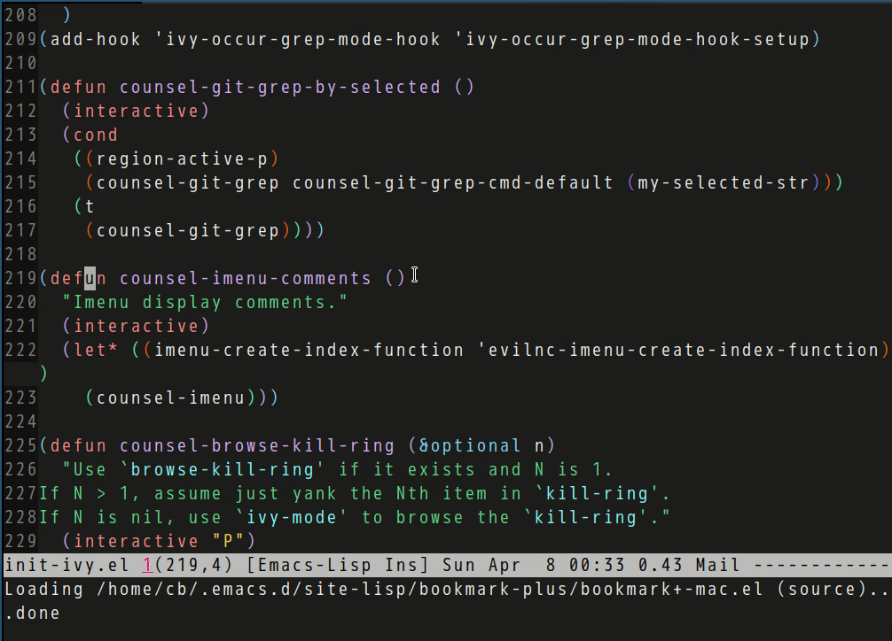

Use Imenu to list comments in current buffer
evil-nerd-commenter v3.2.0 has a new function evilnc-imenu-create-index-function.
Imenu could use this function to list all comments in current file.
Usage:
(require 'counsel)
(defun counsel-imenu-comments ()
"Imenu display comments."
(interactive)
(let* ((imenu-create-index-function 'evilnc-imenu-create-index-function))
(counsel-imenu)))
Screen cast:

counsel-etags v1.3.1 is released
Counsel-etags is a complete solution for code navigation in Emacs.
It needs no setup. One command counsel-etags-find-tag-at-point is enough to start code navigation immediately.
It solves all problems using Ctags/Etags with Emacs.
Problem 1: Ctags takes a few seconds to update the tags file (the index file to lookup tags). The updating process blocks the user's further interaction. This problem is solved by the virtual updating function from counsel-etags. The setup is simple:
;; Don't ask before rereading the TAGS files if they have changed
(setq tags-revert-without-query t)
;; Don't warn when TAGS files are large
(setq large-file-warning-threshold nil)
;; Setup auto update now
(add-hook 'prog-mode-hook
(lambda ()
(add-hook 'after-save-hook
'counsel-etags-virtual-update-tags 'append 'local)))
(add-hook 'after-save-hook 'counsel-etags-virtual-update-tags)
Problem 2: Tag lookup may fail if the latest code is not scanned yet. This problem is solved by running counsel-etags-grep automatically if counsel-etags-find-tag-at-point fails. So users always get results.
There are also other enhancements.
Enhancement 1: Levenshtein Distance algorithm is used to place the better matching candidates at the the top. For example, a function named renderTable could be defined all around in a ReactJS project. But it's very possible the user prefers the definition in same component or same folder where she triggers code navigation.
Enhancement 2: It's inefficient to search the same tag again and again. counsel-etags-recent-tag is used to jump to previous definitions.
Enhancement 3: Ivy-mode provides filter UI for counsel-etags. Its means all the functionalities from Ivy is also available. For example, users can input "!keyword1" to exclude candidates matching "keyword1".
Enhancement 4: counsel-etags-grep uses the fastest grep program ripgrep if it's installed. Or else it falls back to standard grep.
Please check https://github.com/redguardtoo/counsel-etags for more tips.
Auto complete everything in Emacs
As a web developer using frameworks like React/Angular, I spend a lot of time on web components.
A component instance is like:
<GenericTable
onSelectRow={ row => console.log(row) }
numberOfPinnedColumns={2}
withToolBar
onClickCell={ cell => console.log(cell) }
>
<PaginationButtons />
<TotalSum />
<ReportButtons />
</GenericTable>
Basically a component instance is a big chunk of html tags.
I created a new package EACL (Emacs auto complete lines) which could help me input components in unbelievable speed.
The idea is simple. If I've already used one component elsewhere in the project. It's unnecessary to re-type the similar code again.
All I need to do is to input the first characters of the component and run M-x eacl-complete-tag which will grep the project and input the remaining part of component.
Here is a demo to input component ButtonToolbar:

Please note EACL is generic and can be use in any programming language.
M-x eacl-complete-statement to complete below Javascript code:
import {
Button,
Row,
Column
} from 'react-bootstrap';
M-x eacl-complete-snippet to complete below C code:
static int v9fs_drop_inode(struct inode *inode)
{
struct v9fs_session_info *v9ses;
v9ses = v9fs_inode2v9ses(inode);
if (v9ses->cache == CACHE_LOOSE || v9ses->cache == CACHE_FSCACHE)
return generic_drop_inode(inode);
/*
* in case of non cached mode always drop the
* the inode because we want the inode attribute
* to always match that on the server.
*/
return 1;
}
You can also create your own commands based on API eacl-complete-multi-lines-internal.
For example, it is a piece of cake to support Lisp by creating command my-complete-lisp:
(require 'eacl)
(defun my-complete-lisp ()
(interactive)
(eacl-complete-multi-lines-internal "[^)]*)"))
Split Emacs window with certain ratio
The idea comes from yangdaweihit. Here is the implementation.
(defvar my-ratio-dict
'((1 . 1.61803398875)
(2 . 2)
(3 . 3)
(4 . 4)
(5 . 0.61803398875))
"The ratio dictionary.")
(defun my-split-window-horizontally (&optional ratio)
"Split window horizontally and resize the new window.
Always focus bigger window."
(interactive "P")
(let* (ratio-val)
(cond
(ratio
(setq ratio-val (cdr (assoc ratio my-ratio-dict)))
(split-window-horizontally (floor (/ (window-body-width)
(1+ ratio-val)))))
(t
(split-window-horizontally)))
(set-window-buffer (next-window) (other-buffer))
(if (or (not ratio-val)
(>= ratio-val 1))
(windmove-right))))
(defun my-split-window-vertically (&optional ratio)
"Split window vertically and resize the new window.
Always focus bigger window."
(interactive "P")
(let* (ratio-val)
(cond
(ratio
(setq ratio-val (cdr (assoc ratio my-ratio-dict)))
(split-window-vertically (floor (/ (window-body-height)
(1+ ratio-val)))))
(t
(split-window-vertically)))
;; open another window with other-buffer
(set-window-buffer (next-window) (other-buffer))
;; move focus if new window bigger than current one
(if (or (not ratio-val)
(>= ratio-val 1))
(windmove-down))))
(global-set-key (kbd "C-x 2") 'my-split-window-vertically)
(global-set-key (kbd "C-x 3") 'my-split-window-horizontally)
Usage is simple. For example, C-x 2 is similar to original split-winddow-vertically while C-u 1 C-x 2 split the window in golden ratio.
Enhance diff-mode with Ivy
My current job requires me to review the freelancer's patches and apply them to our code branch under Perforce control. Due to my client's security policy, the freelancer can only work on isolated sandbox environment and can't access our code base directly.
I need two steps to finish the task:
- Open the freelancer's patch in
diff-mode - Run
diff-apply-hunkto apply the hunks interactively
The problem is diff-mode always ask me to specify the file to be patched.
I read the code of diff-apply-hunk. The logic of diff-apply-hunk is simple. It tries different algorithms to guess the right file to patch. When the algorithms fail, it calls API read-file-name to ask me to provide the file path manually. If right file is found, the algorithms will work again and read-file-name will never be used for other hunks.
Here is my solution. I can find the file to patch in recent opened files because I store all of them by (setq recentf-max-saved-items 2048). I plan to use ivy-read from Ivy to locate the file at first. If this step fails , I can still fall back on original API read-file-name.
Here is the code
(defvar ffip-read-file-name-hijacked-p nil)
(defun ffip-diff-apply-hunk (&optional reverse)
(interactive "P")
(unless recentf-mode (recentf-mode 1))
(setq ffip-read-file-name-hijacked-p t)
(defadvice read-file-name (around ffip-read-file-name-hack activate)
(cond
(ffip-read-file-name-hijacked-p
(let* ((args (ad-get-args 0))
(file-name (file-name-nondirectory (nth 2 args)))
(cands (remove nil (mapcar (lambda (s) (if (string-match-p (format "%s$" file-name) s) s))
(mapcar #'substring-no-properties recentf-list))))
(rlt (ivy-read "Recentf: " cands)))
(if rlt (setq ad-return-value rlt) rlt ad-doit)))
(t
ad-do-it)))
(diff-apply-hunk reverse)
(setq ffip-read-file-name-hijacked-p nil))
Please note ffip-diff-apply-hunk can replace diff-apply-hunk.
BTW, I can edit the patch on the spot when applying hunks. Similar to the work flow of git add --patch.
The solution is added into https://github.com/technomancy/find-file-in-project.
Firefox and Emacs
For me, there is NO difference between Firefox and Emacs. They provide useful APIs, nothing more.
Three years ago, I wrote Use firefox in Emacs way to demo how to convert Firefox into Emacs by Keynsail.
A year ago I published Hello Ivy-mode, bye Helm to prove how powerful Ivy-mode is by using its API ivy-read.
Keysnail has similar javascript API prompt.selector and it's as powerful as ivy-read if not more powerful.
For example, you can insert below snippet into ~/.keysnail.js and press ",hh" or "C-c C-h" to query browse history:
function searchHistory(evt, arg) {
function timeSince(now, date) {
var seconds = Math.floor((now - date) / 1000);
var interval = Math.floor(seconds / 31536000);
if (interval > 1) {
return interval + " years";
}
interval = Math.floor(seconds / 2592000);
if (interval > 1) {
return interval + " months";
}
interval = Math.floor(seconds / 86400);
if (interval > 1) {
return interval + " days";
}
interval = Math.floor(seconds / 3600);
if (interval > 1) {
return interval + " hours";
}
interval = Math.floor(seconds / 60);
if (interval > 1) {
return interval + " minutes";
}
return Math.floor(seconds) + " seconds";
}
function searchWithKeyword(q) {
var collection = (function() {
//search option
var options = PlacesUtils.history.getNewQueryOptions();
options.maxResults = 4096;
options.queryType = Ci.nsINavHistoryQueryOptions.QUERY_TYPE_HISTORY;
//options.sortingMode = Ci.nsINavHistoryQueryOptions.SORT_BY_FRECENCY_DESCENDING;
options.sortingMode = Ci.nsINavHistoryQueryOptions.SORT_BY_DATE_DESCENDING;
options.includeHidden = true;
//search query
var query = PlacesUtils.history.getNewQuery();
// read keyworld
if(q && q !== '') {
query.searchTerms = q;
}
var result = PlacesUtils.history.executeQuery(query, options);
var root = result.root;
var collection = [];
var now = new Date().getTime();
var siteNode;
root.containerOpen = true;
for (var i = 0; i < root.childCount; i++) {
// siteNode => nsINavHistoryResultNode
siteNode = root.getChild(i);
collection.push([siteNode.icon,siteNode.title,siteNode.uri, siteNode.time/1000]);
}
collection.sort(function(a, b) {
return b[3]-a[3];
});
// reformat the time
for (i = 0; i < collection.length; i++) {
collection[i][3] = timeSince(now, collection[i][3]) + ' ago';
}
root.containerOpen = false;
return collection;
})();
prompt.selector({
message : "Search history"+ (q && q !== ''? (' @'+q +':') : ':' ),
collection : collection,
flags : [ICON | IGNORE, 0, 0, 0],
header : ["Title", "Url", "Last visited"],
width : [30, 60, 10],
callback: function (i) {
if (i >= 0) {
openUILinkIn(collection[i][2], "tab");
}
},
onFinish: function() {
gBrowser.focus();
_content.focus();
}
});
}
prompt.finish(true);
prompt.read('Keyword to search history?', searchWithKeyword, null, null, null, 0, "history_search");
// searchWithKeyword('test');
}
key.setViewKey([',', 'h', 'h'], searchHistory, "Search history");
key.setGlobalKey(['C-c', 'C-h'], searchHistory, "Search history");
Here is my complete .keysnail.js.
Use wgrep and evil to replace text efficiently
In my previous article Emacs is easy if you read code, I proved ivy and wgrep is easy if you read code. You can even create your own plugin based on their APIs. For example, I define my-grep and my-grep-occur in init-ivy.el in order to search/replace text in project root directory.
My wgrep-mode enabled buffer is in evil-mode. I prefer pressing vi key binding dd to remove lines in that buffer to tell wgrep skip them.
It turns out we need M-x C-c C-p or M-x wgrep-toggle-readonly-area before removing lines.
I'm too lazy to remember extra commands. So here is the workaround:
;; Press `dd' to delete lines in `wgrep-mode' in evil directly
(defadvice evil-delete (around evil-delete-hack activate)
;; make buffer writable
(if (and (boundp 'wgrep-prepared) wgrep-prepared)
(wgrep-toggle-readonly-area))
ad-do-it
;; make buffer read-only
(if (and (boundp 'wgrep-prepared) wgrep-prepared)
(wgrep-toggle-readonly-area)))
Emacs is easy if you read code
If you regard a package as a collection of APIs and read its code, Emacs is easy to master.
For example, after reading using counsel-ag and wgrep to edit multiple files, I dig the code of counsel-ag-occur from counsel.el (v0.9.1),
(defun counsel-ag-occur ()
"Generate a custom occur buffer for `counsel-ag'."
(unless (eq major-mode 'ivy-occur-grep-mode)
(ivy-occur-grep-mode))
(setq default-directory counsel--git-grep-dir)
(let* ((regex (counsel-unquote-regex-parens
(setq ivy--old-re
(ivy--regex
(progn (string-match "\"\\(.*\\)\"" (buffer-name))
(match-string 1 (buffer-name)))))))
(cands (split-string
(shell-command-to-string
(format counsel-ag-base-command (shell-quote-argument regex)))
"\n"
t)))
;; Need precise number of header lines for `wgrep' to work.
(insert (format "-*- mode:grep; default-directory: %S -*-\n\n\n"
default-directory))
(insert (format "%d candidates:\n" (length cands)))
(ivy--occur-insert-lines
(mapcar
(lambda (cand) (concat "./" cand))
cands))))
(ivy-set-occur 'counsel-ag 'counsel-ag-occur)
(ivy-set-display-transformer 'counsel-ag 'counsel-git-grep-transformer)
Inside counsel-ag-occur:
- The variable
regexis the regular expression built from the filter string you input. Please note thatregexis unquoted bycounsel-unquote-regex-parensso it can be used in shell. If you useregexin Emacs Lisp, you don't need unquote it - The variable
candsis the candidate lines created by runningagwithregexas parameters in shell - Then a wgrep-friendly buffer is created
So five minutes code reading is enough to implement similar features.
My project uses Perforce as VCS. So I need check out files and make them writable before using wgrep.
Code of wgrep.el (v2.1.10),
(defun wgrep-prepare-context ()
(save-restriction
(let ((start (wgrep-goto-first-found))
(end (wgrep-goto-end-of-found)))
(narrow-to-region start end)
(goto-char (point-min))
(funcall wgrep-results-parser))))
wgrep-results-parser is actually alias of wgrep-parse-command-results whose code is too much to paste here. Please run M-x find-function wgrep-parse-command-results to read its code.
By combining wgrep-prepare-context and wgrep-parse-command-results I got my own access-files-in-wgrep-buffer:
(defun access-files-in-wgrep-buffer()
(interactive)
(save-restriction
(let* ((start (wgrep-goto-first-found))
(end (wgrep-goto-end-of-found))
fn-accessed)
(narrow-to-region start end)
(goto-char (point-min))
(unless (featurep 'wgrep) (require 'featurep))
(while (not (eobp))
(if (looking-at wgrep-line-file-regexp)
(let* ((fn (match-string-no-properties 1)))
(unless (string= fn fn-accessed)
(setq fn-accessed fn)
(message "File relative path=%s" fn))))
(forward-line 1)))))
You can replace the line (message "File relative path=%s" fn) with (shell-command (format "any-shell-cli %s" fn)) to do anything on the files.
Please insert access-files-in-wgrep-buffer into ~/.emacs.d/init.el and run M-x access-files-in-wgrep-buffer in wgrep buffer to have a test.
For example, I modified access-files-in-wgrep-buffer to p4edit-in-grep-buffer to checkout files under Perforce control,
(defun p4edit-in-wgrep-buffer()
"'p4 edit' files in wgrep buffer.
Turn off `read-only-mode' of opened files."
(interactive)
(save-restriction
(let* ((start (wgrep-goto-first-found))
(end (wgrep-goto-end-of-found))
fn-accessed)
(narrow-to-region start end)
(goto-char (point-min))
(unless (featurep 'wgrep) (require 'featurep))
(while (not (eobp))
(if (looking-at wgrep-line-file-regexp)
(let* ((filename (match-string-no-properties 1)) buf)
(unless (string= filename fn-accessed)
(setq fn-accessed filename)
(shell-command (format "p4 edit %s" filename))
(if (setq buf (get-file-buffer filename))
(with-current-buffer buf
;; turn off read-only since we've already `p4 edit'
(read-only-mode -1))))))
(forward-line 1)))))
Auto-complete word in Emacs mini-buffer when using Evil
When using Evil I often input %s/old-keyword/new-keyword/g in Minibuffer.
The problem is auto completions of new-keyword using hippie-expand always fail.
It turns out that the character "/" is treated as Word constituent in minibuffer.
The solution is to re-define "/" as Punctuation characters:
(defun minibuffer-inactive-mode-hook-setup ()
;; make `try-expand-dabbrev' from `hippie-expand' work in mini-buffer
;; @see `he-dabbrev-beg', so we need re-define syntax for '/'
(set-syntax-table (let* ((table (make-syntax-table)))
(modify-syntax-entry ?/ "." table)
table)))
(add-hook 'minibuffer-inactive-mode-hook 'minibuffer-inactive-mode-hook-setup)
Indent JSX in Emacs
I find rjsx-mode annoying when it indents closed html tag with extra spaces.
It's based on js2-mode which is actually just calling Emacs v25 API js-jsx-indent-line.
So the solution is as simple as advice js-jsx-indent-line:
(defadvice js-jsx-indent-line (after js-jsx-indent-line-after-hack activate)
"Workaround sgml-mode and follow airbnb component style."
(let* ((cur-line (buffer-substring-no-properties
(line-beginning-position)
(line-end-position))))
(if (string-match "^\\( +\\)\/?> *$" cur-line)
(let* ((empty-spaces (match-string 1 cur-line)))
(replace-regexp empty-spaces
(make-string (- (length empty-spaces) sgml-basic-offset) 32)
nil
(line-beginning-position) (line-end-position))))))